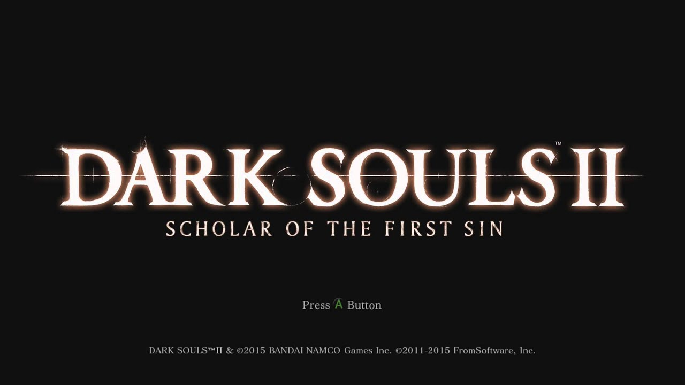
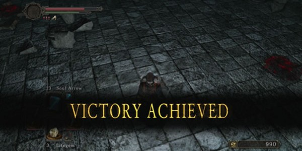
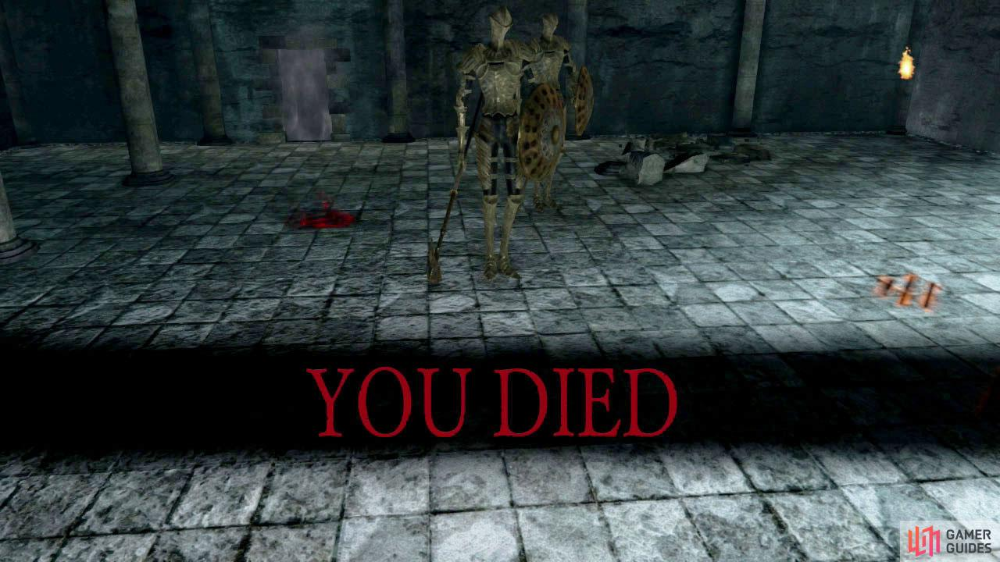

What is Dark Souls 2?
Dark Souls 2 is an RPG created by FromSoftware that was released in 2014. The story involved the player, known as the "Bearer of the Curse", as they seek the king of Drangleic and attempt to stop the "Age of Darkness" by rekindling the "First Bonfire." The player chracater has to travel through many different areas, landscapes, and kingdoms to find and defeat the bosses that guard the castle of Drangleic, while also learning about the rise and fall of the past kingdoms. This game was met with critical accliam and won the 2014 "Game of the Year" award. Although it has a rather large following, some Souls game veterans consider this game to be the outlier in the series. This is due to the issues stated above, that the game was too difficult and the combat was "cramped" at times. While it does have its flaws, it's hard to deny that Dark Souls 2 is still one of the best games of 2014.
Why Should I Play?
I highly recommend playing Dark Souls 2 because not only does it give you a good challenge, it also improves your abilities. As i've stated before, this game requires you to practice strategies in order to defeat the boss. This requires players to play intelligently and cautiously, something which is not seen often in games. This game also contains a great story and plenty of lore behind the game and its characters, although sometimes it can be a little complex and confusing for new players. Another reason I recommend this game and the ones like it are because of the amazing PvP system. While not as active as it usually was, Dark Souls 2 still has a great player-vs-player system that can help you both hone your skills, and find friends you can work together with. One final reason to play is beacause of the ability to play the game anyway you want. There is not a linear path to take. You can go anyway you want and you can fight anyway you want. You are not required to take a certain path and use a certain weapon, which is what makes this game so innovating.
Why Shouldn't I Play?
While I highly recommend you to play Dark Souls 2, I will also admit that this game is not for everyone. This game requires a very large amount of patience, something that not everybody exactly has. This game requires you to fail so you can learn from your errors and do better next time, something not that everybody is willing to do. If you like to rush through and just explore without needing to be on guard all the time, stay away from this game. This game requires you to be cautious at all times and to carefully think about your next move. Also, this game can be seen as slow-paced by some players. This game is one that may require you to play an entire day just to get through one area, something I learned from personal experience. People who want to go through areas quickly will soon find themselves either outmatched or outleveled. This game awards patience and planning, so rushing through a game like this is far from recommended.
